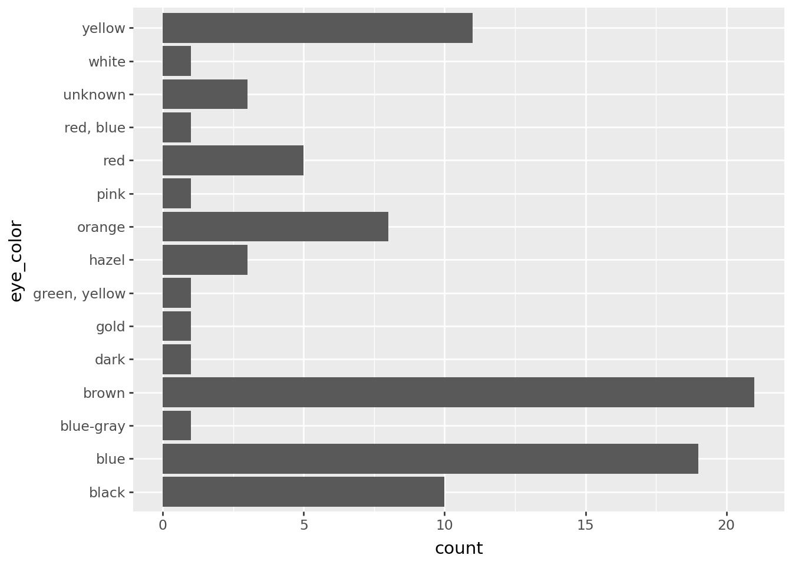
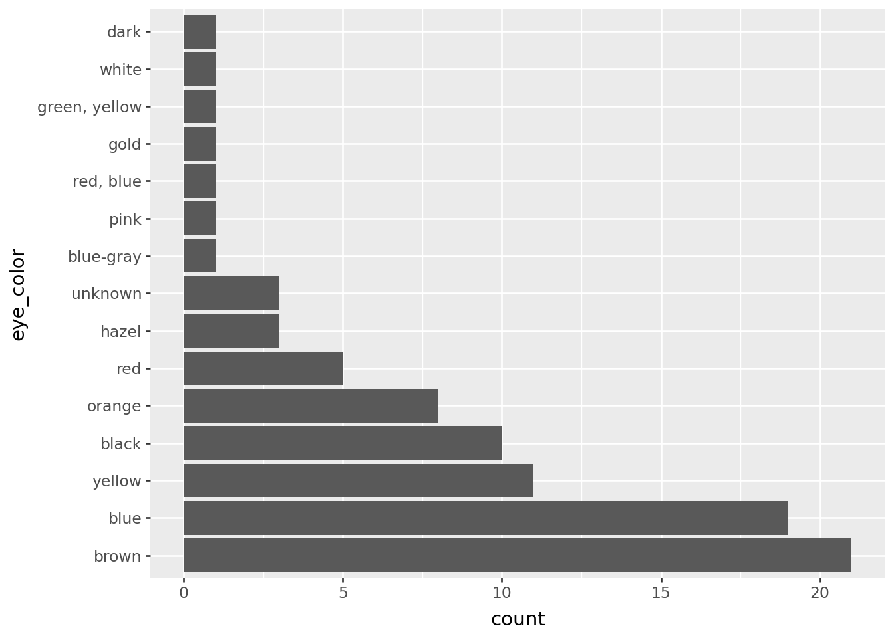
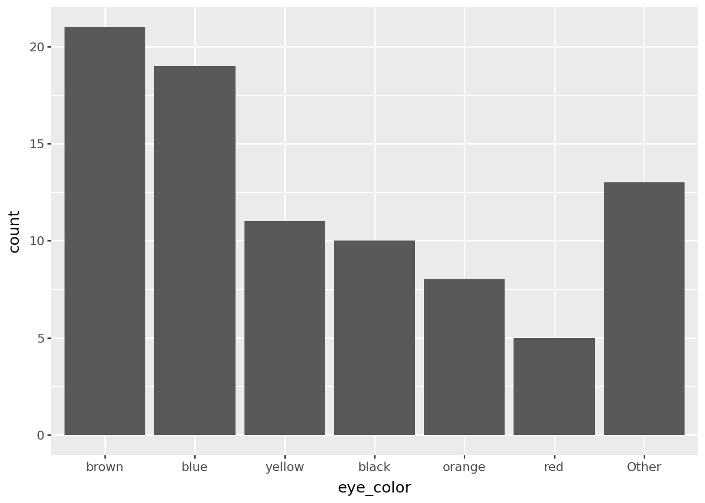
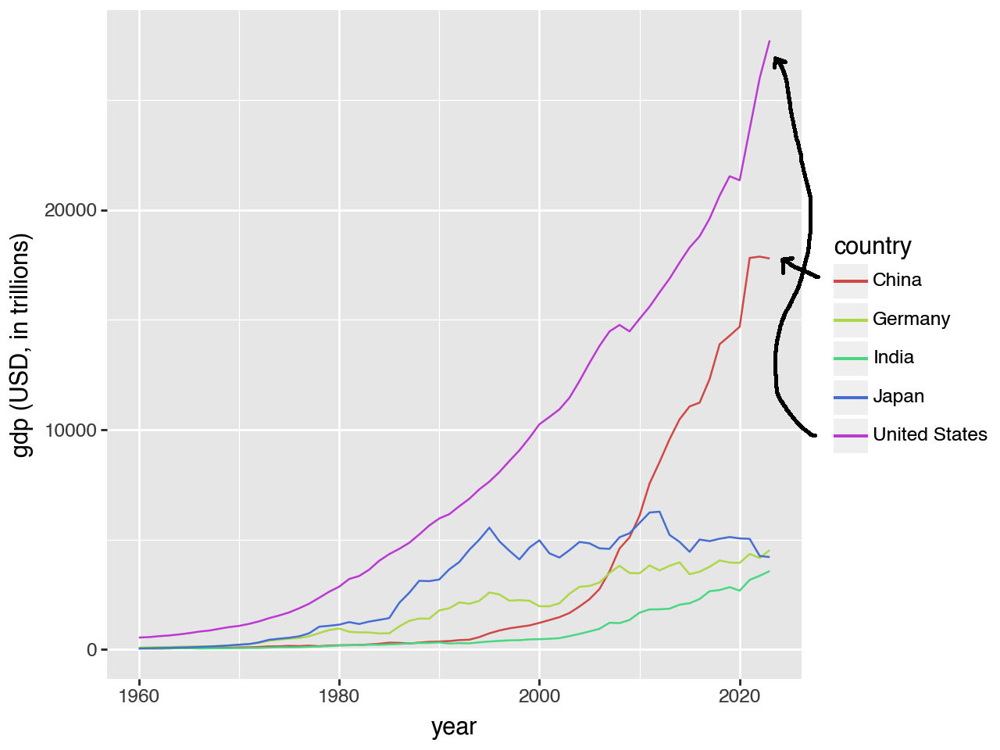
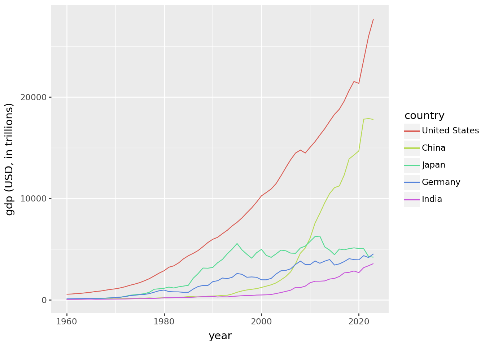

# import as fct for convenience ----
import catfact as fct
from catfact.polars.data import gdp, ratings, starwars
# catfact works well with Polars and Plotnine ----
import polars as pl
from plotnine import ggplot, aes, geom_bar, geom_line, labs, coord_flipOverview
catfact is a library for working with categorical data in Python DataFrames. It address some common challenges when working with them. Categorical data is useful when you want to display your data in a specific way, like alphabetical, most frequent first, or along a scale.
catfact currently works with Polars, but will support Pandas in the future.
This overview will show you how to install and use catfact, focused on four of its most handy functions:
fct.infreq(): order categories by frequency.fct.lump_n(): lump infrequent categories together.fct.reorder(): reorder categories based on a calculation.fct.relevel(): reorder categories based on a manual order.
Install
pip install catfactImport and basic use
Suppose you have a Polars Categorical Series. You can get the category levels with .cat.get_categories().
counts = pl.Series(["z", "z", "a", "b"], dtype=pl.Categorical)
counts.cat.get_categories().to_list()['z', 'a', 'b']Notice that the categories are ordered by when they first appear. Since "z" is the first element of the Series, it’s also the first category.
catfact provides functions like fct.inseq(), which orders categories alphabetically, and fct.cats() as a shorthand for .cat.get_categories().
count_seq = fct.inseq(counts)
fct.cats(count_seq).to_list()['a', 'b', 'z']
Using the Polars fct namespace
catfact provides a .fct namespace for working with Polars Series.
import catfact.polars
counts.fct.inseq().fct.cats().to_list()['a', 'b', 'z']In the following sections, we’ll look at examples of four of the most useful functions in catfact: fct.infreq(), fct.lump_n(), fct.reorder(), and fct.relevel().
fct.infreq
fct.infreq() reorders categories by frequency. This is useful combined with Plotnine, to order bars in a bar chart.
For example, the plot below counts starwars character by eye color, but the bars are ordered alphabetically by default.
(
starwars
>> ggplot(aes("eye_color"))
+ geom_bar()
+ coord_flip()
)
The code below uses fct.infreq() with the Polars pl.DataFrame.with_columns method to order the eye_color column’s categories by frequency. Plotnine knows to use the categories to order the bars.
(
starwars
.with_columns(
eye_color=fct.infreq(pl.col("eye_color"))
)
>> ggplot(aes("eye_color"))
+ geom_bar()
+ coord_flip()
)
fct.lump_n
fct.lump_n() combines infrequent categories into a single category, called “Other” by default. This is useful for cutting down the number of bars in a plot.
Here it’s used to cut down the number of eye colors to 8, lumping the rest into “Other”.
(
starwars
.with_columns(
eye_color=fct.lump_n(pl.col("eye_color"), n=6)
)
>> ggplot(aes("eye_color"))
+ geom_bar()
)
fct.reorder
fct.reorder() reorders categories based on a calculation on another column.
For example, the line chart below shows GDP over time for several countries. The countries are ordered alphabetically in the legend, but this means they don’t match up to the end of the lines well.

Notice that China is the top entry, but ends as the second highest line. The United States is the last entry, but ends as the highest line. The black lines show how far apart the legend entries are from their lines.
The code below fixes the legend. It uses fct.reorder() to reorder the country column by calculating pl.element().max() on the gdp column.
(
gdp
.with_columns(
country=fct.reorder(
pl.col("country"),
pl.col("gdp"), # used for reordering
pl.element().max(), # calculation
desc=True,
)
)
>> ggplot(aes("year", "gdp", color="country"))
+ geom_line()
+ labs(y="gdp (USD, in trillions)")
)
fct.relevel
fct.relevel() reorders categories based on a manual order. This is useful when you want to display categories in a specific order, like a scale from “very-bad” to “very-good”.
The code below counts ratings data provided by catfact. However, the order of the counts don’t match the order you’d expect from a ratings scale.
(
ratings
.group_by("rating")
.agg(pl.len())
)
shape: (5, 2)
| rating | len |
|---|---|
| str | u32 |
| "neutral" | 4 |
| "good" | 3 |
| "very-good" | 2 |
| "very-bad" | 1 |
| "bad" | 1 |
Notice that “neutral” is first, but often you want to start with “very-bad” and end with “very-good”. By passing in a new order to fct.relevel(), you can manually set the correct order of categories.
new_order = ["very-bad", "bad", "neutral", "good", "very-good"]
fixed_counts = (
ratings.with_columns(
# set new level order for rating
rating=fct.relevel(pl.col("rating"), *new_order)
)
.group_by("rating")
.agg(pl.len())
.sort("rating")
)
fixed_counts
shape: (5, 2)
| rating | len |
|---|---|
| enum | u32 |
| "very-bad" | 1 |
| "bad" | 1 |
| "neutral" | 4 |
| "good" | 3 |
| "very-good" | 2 |
A key here is that Polars uses the category levels when doing .sort("rating"). Here are the categories listed.
fct.cats(fixed_counts["rating"]).to_list()['very-bad', 'bad', 'neutral', 'good', 'very-good']